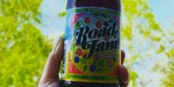
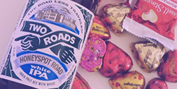
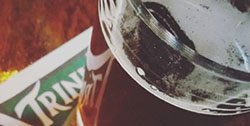
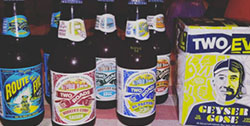

- 
Spring Brews
Spring is right around the corner! Get ready for these top spring time brews that will be hitting the shelves so you can hit the bottle.
- 
Best Valentine Treats
Of course you can pair beer with chocolate! Looking for the best compliment to your valentine left over chocolate? Check out this list of favorite pairs.
- 
Valentine Brew Pubs
Looking for a prime date spot this Valentine's day? Make sure to check out these top brew pub to take your special date.
Next stop: a road less traveled!
If you ever plan to go to the Two Roads brewery in Stratford CT on a Saturday or Sunday, there is an easy way to get to the road less traveled. On the westbound side of the train station, you can hop on the 12 Pack Bus, which will take you right to the brewery. Text 203-449-1425 a hour in advance and the bus will pick you and your friends up.
Great food and beer; what’s better?!
Sometimes we plan a day to go brewery hopping, but forget not all of them serve food. Too much beer on an empty stomach can be a dangerous day. Brutopia in Cranston RI, not only serves their own brews from their brew room Revival Brewing Co., but also serve up some of the best barbeque any pub in RI has to offer.
What's on Tap?
Check out this weeks featured brew
Featured Micro Brewery
Check out a small growing micro brewery in a little town in CT. Click here to see their future plans of brewing, and an interview with owners themselves.